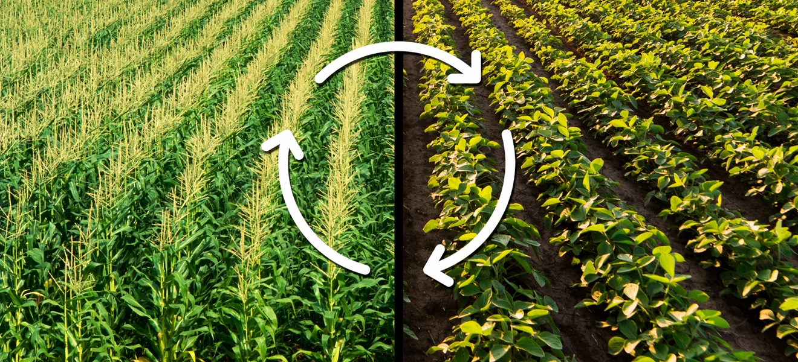

What is Crop Rotation?
Crop rotation is a farming practice where different crops are planted in a specific sequence on the same piece of land each year. This helps improve soil health, reduce pest and disease problems, and increase overall crop yields.

Agroforestry
Agroforestry combines trees into agricultural systems, providing benefits such as improved soil health, increased biodiversity, and better water management.
Water Conservation
Using efficient irrigation methods, such as drip irrigation, can conserve water by delivering it directly to the roots of the plants.